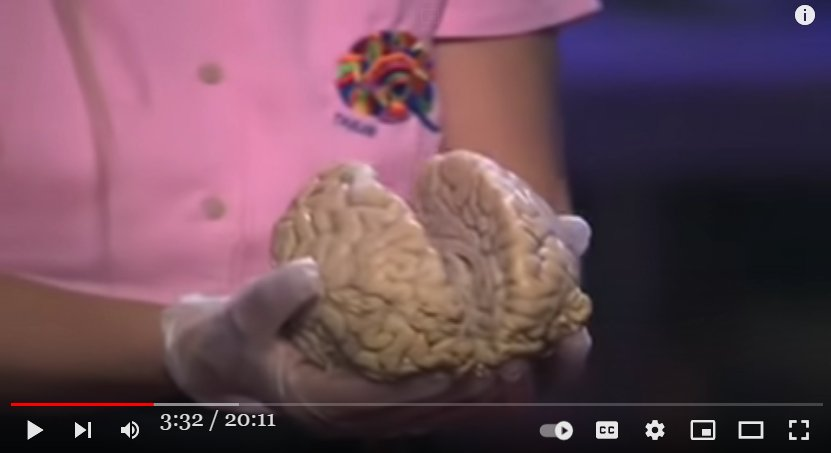

Jill Bolte Taylor の左脳機能障害によるニルバーナ体験
手抜き
- 左脳が侵され、後に回復した脳神経科の専門医のニルバーナ体験については下の過去記事でチラリと言及した。・この不可逆性の大悟には、左脳の一部機能の永続的な抑止（or 遮断）が伴っているのではないか。左脳の一部機能の抑止によって、ニルバーナの実感が以後も永続し、死や人生の苦から脱却したと実感するのだろう。 ・数週間だか数か月だかに渡って左脳が侵され、後に回復した女医（脳神経科の専門医）がその期間、ニルバーナに浸っていたという TED 講演での証言（過去記事で紹介したかも？）がこの仮説の補強材料になる筈。彼女は左脳機能が回復した途端に、ニルバーナが終了し、人生の苦しみも再開したと述べていた。 ・ちなみに、彼女が自宅で最初に左脳機能の麻痺症状を自覚し、同僚の脳神経専門医に助けを求めて電話連絡した際の逸話が面白い。左脳機能が麻痺しているので電話をかけることも簡単ではない。ようやく電話がつながったが、今度は言葉で説明ができない。ウーとかオーとかいう声しか出せない。それを聞いた同僚は…（略） ref: Raymond Moody : 人生の危機→自殺願望→接神体験→現実がどれほど悲惨でも、結局のところ全ては OK だと悟った。（全体） (2021-03-27)- この体験者について Grant Cameron が言及していた。それで Jill Bolte Taylor という名前が判明したので記録しておく(*1)。- 彼女の Ted 講演動画が下。彼女は人間の脳（本物）を手に講演をしている。「全てはひとつ」体験も 9:00 あたりで語っている。▼展開
手抜き
GC: 例の脳をやられた脳神経科医の体験 there there was no way 34:55 i wasn't going there and i can remember if you have remembered jim jill bolte taylor who was the neuro anatomist from 35:01 harvard who had this left brain hemorrhage thing where she was out in the universe she was one with the universe and stuff like that and she 35:07 describes this experience of seven weeks with no fear whatsoever and and what does she say she 35:13 said you couldn't talk about it you could not talk about consciousness so we've come a long way and i make the 35:18 joke that even in you followed you today people talk about consciousness because they know it's a buzz word you better talk about it even though they haven't 35:24 got a clue what they're talking about they're starting to use the word we're starting to make a shift here where every time they bring up a動画(2:04:19)
GRANT CAMERON
動画(20:11)
My stroke of insight | Jill Bolte Taylorコメント
- 彼女の体験は私の以下の主張を強く支持している。- このように私は精神世界や宗教業界の価値観は完全に転倒していると見ている。 ・ESP は人間の高度な精神作用ではなく、バグによる副作用 ・解脱や大悟は意識障害の結果 ・チャネリングや神秘体験も意識障害の結果 ・超能力や通力もバグによる副作用 ・OBE や NDE も意識障害の結果 ref: Bigfoot 目撃多発現場で動画撮影： 出現した orb をカメラが捉え、同時にその場に Bigfoot の姿を目撃 (2022-03-24)
Wikipedia の記事の DeepL 訳
ジル・ボルテ・テイラー（/ˈbɒ, 1959年5月4日生まれ）は、アメリカの神経解剖学者、作家、インスピレーションを与える講演者である。 テイラーが重度の精神病の研究を始めたのは、脳がどのように機能しているのか、また、彼女の兄が夢と現実を切り離せず、妄想にしているのに対し、彼女は夢を現実と区別している原因を理解したかったからである。テイラーはボストンの研究所で働き始め、脳の地図を作って、どの細胞がどの細胞と通信しているかを調べました。1996年12月10日、テイラーは脳卒中で倒れた。左脳に血管が破裂したのだ。彼女は、自分の脳が停止し始めるのを目撃していた。4時間のうちに、話すことも、読むことも、歩くことも、書くことも、過去の記憶を思い出すこともできなくなった。テイラーは、この脳卒中を「幼児に戻ったようなもの」と表現している。 1996年、37歳のときに経験した大規模な脳卒中と、その後の8年間の回復は、彼女の科学者としての活動や講演に影響を与えた。2006年に出版された『My Stroke of Insight, A Brain Scientist's Personal Journey』では、この体験が題材とされている。この本はNYタイムズのベストセラーとなり、30カ国語で出版された。 テイラーは、統合失調症や重度の精神疾患に関連する人間の脳の死後調査を専門としています。脳卒中に関連した著書や広報活動が評価され、2008年5月、米タイム誌の「2008年世界で最も影響力のある100人」に選ばれた[1] 「My Stroke of Insight」は2009年2月23日にニューヨークで行われた全米多発性硬化症協会ニューヨーク市支部から科学部門の「Books for a Better Life」最高賞を受賞した[2]. テイラーは、非営利団体Jill Bolte Taylor Brains, Inc.を設立し、インディアナ大学医学部に所属し、ハーバード大学脳組織リソースセンターの全国広報担当者でもあります。 脳卒中[編集]。 1996年12月10日、テイラーは目を覚ますと、脳卒中が起きていることに気づいた。原因は、左脳の動脈と静脈が先天的に異常につながっている動静脈奇形（AVM）からの出血であることが判明した。その3週間後の1996年12月27日、彼女はマサチューセッツ総合病院（MGH）で脳の大手術を受け、左脳の言語中枢を圧迫しているゴルフボール大の血栓を除去しました。 テイラーは2008年2月のTEDカンファレンスで脳卒中の記憶について講演[4]し、インターネット上でセンセーションを巻き起こし、世界中で広く注目と関心を集めることになりました[5]。この講演は、TEDの講演の中で2番目に多く視聴された講演となった[6]。次の版では、すぐにベストセラーとなった。 テイラーの代理人であるトランスメディアエージェントで弁護士のエレン・スティーフラーが『My Stroke of Insight』の世界的出版権のオークションを行った結果、ペンギンが落札し、2008年5月にハードカバーで出版されて、ニューヨークタイムズのノンフィクションハードカバーのベストセラーリストの上位に初登場しました[7]。「My Stroke of Insight "はニューヨークタイムズのベストセラーリストで63週を過ごし、4位となった[8]。 30カ国語以上で提供されています。[9] その後、テイラーは2008年10月21日にオプラ・ウィンフリー・ショーに出演した[10]。オプラ・ウィンフリーは、2009年5月10日にデューク大学の卒業式で、「自分がもたらすエネルギーに責任がある」というテイラーの主張を引用し、学生たちに今後の人生で同じ責任を負うよう奨励した[11]。テイラーは、オプラズ・ソウル シリーズ [12] の最初のゲストであり、ウェブキャストのオペラ・ドッドコムと衛星ラジオ番組でも取り上げられた[11]。 Jill Bolte Taylor (/ˈbɒlti/; born May 4, 1959) is an American neuroanatomist, author, and inspirational public speaker. Taylor began to study severe mental illnesses because she wanted to understand what makes the brain function the way it does and the cause between her dreams being distinguished from reality while her brother cannot disconnect his dreams from reality, making them a delusion. Taylor began working in a lab in Boston where they were mapping out the brain to figure out which cells communicate with which cells. On December 10, 1996, Taylor had a stroke — a blood vessel had erupted on the left side of her brain. She had been able to witness her own brain begin to shut down. Within a span of four hours, she could not speak, read, walk, write or remember anything from her past. Taylor compares her stroke to being like an infant again. Her personal experience with a massive stroke, experienced in 1996 at the age of 37, and her subsequent eight-year recovery, influenced her work as a scientist and speaker. It is the subject of her 2006 book My Stroke of Insight, A Brain Scientist's Personal Journey. She gave the first TED talk that ever went viral on the Internet, after which her book became a NY Times bestseller and was published in 30 languages.(*1)
- チェックしたら 3年半前の過去記事で彼女の話題をチラリと取り上げていたが、例によって途中で放置。 Jill Bolte Taylor : 左脳が機能停止（？）した時、宇宙と一体化した。 （途中：その1） (2018-10-15) (2022-04-17)
初出
Jill Bolte Taylor の左脳機能障害によるニルバーナ体験 (2022-04-17)